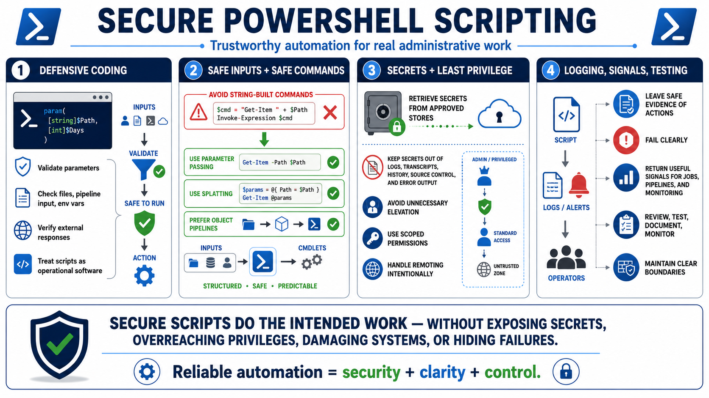

Course Summary
Connecting to LMS... Progress: in progress

Narration
Secure PowerShell scripting combines defensive coding, safe input handling, least privilege, careful credential handling, logging, testing, and maintainability. PowerShell is powerful because it can automate real administrative work across local systems, cloud services, directories, endpoints, and response workflows. That same power means scripts should be treated as operational software, not disposable command history.
Strong scripts validate parameters, files, pipeline input, environment variables, and external responses before acting on them. They avoid unsafe string-built commands and use structured parameter passing, splatting, and object pipelines where practical. They protect secrets by retrieving them from approved stores and avoiding exposure in logs, transcripts, command history, source control, and error output.
Trustworthy automation also respects administrative boundaries. It avoids unnecessary elevation, uses scoped permissions, handles remoting intentionally, and leaves safe evidence of important actions. It fails clearly when something is wrong and returns signals that scheduled jobs, pipelines, and monitoring tools can understand. Security and reliability reinforce each other because visible failures are easier to fix than silent partial success.
The final takeaway is that secure scripts are reviewed, tested, documented, monitored, and operated within clear boundaries. They do the intended work without exposing secrets, overreaching privileges, damaging systems, or hiding failures. When PowerShell automation is built this way, it becomes a dependable administrative capability rather than a source of unmanaged risk.